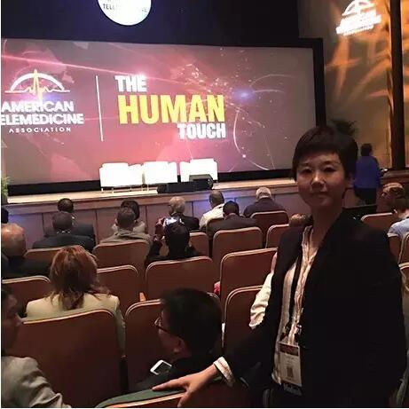

美国东部时间5月16日，美国远程医疗协会2016年年会（简称ATA2016）在美国明尼苏达州国际会议中心拉开序幕。途欢医疗健康科技有限公司董事长兼CEO阳琳，亲赴明尼阿波尼斯市，参加了本次ATA年会。
ATA简介：美国远程医疗协会（ATA)，创立于1993年，总部位于华盛顿，是全球领先及公认的远程医疗技术的倡导者和先行者。在美国，ATA致力于协同国会与政府机构，在全美各医疗机构中推行远程医疗技术，以此提升医疗保健的效率与质量。ATA年会，是世界远程医疗领域规模最大的学术会议与博览会，本次与会者包括美国政府机构代表、顶尖医疗机构高管及远程医疗中心负责人和知名远程医疗服务供应商等，梅奥医疗集团董事长兼CEO出席并发表了开幕致辞。
尽管中美两国的医疗保健机制与支付体系存在非常大的差异，但老百姓对医疗健康服务的需求却是相似的，两国政府对于国民健保的总体目标，如效率、质量、控费，也有诸多相同处，两国发展差异有哪些？就让我们随途欢CEO一起，在2016·ATA年会中去感悟。
1．远程医疗，用有效的管理实现最佳疗效
ATA2016开幕会议上，展示了一则温情的短片：一位名叫Kathy的67岁老太太进行了膝关节置换手术。Kathy做完膝关节置换手术后，遵从医生建议，接受了远程医疗康复管理。她的医生会每天通过远程视频与她交流。每天，医生会询问她“如果把疼痛划分为1到10级，你今天的感觉是多少？”而Kathy则依照医生的指导做出关于疼痛好转情况的自我评估，医生不仅掌握了她的康复进展，同时指导她如何进行功能训练，避免了老年人术后可能出现的并发症，康复效果也令kathy非常满意。Kathy与她的主刀医生也走上了ATA2016的开幕现场讲台，谈了各自对远程医疗的观点、感受。Kathy的体验是，因为与医生的定期交流，感觉医护人员似乎没有离开过她，康复信心很足，并十分感激医护人员的关怀呵护。
2．老年人是远程医疗的最大受益群体
在今天的美国老龄人群中，已有超过5成老年患者接受了远程医疗下的居家健康管理项目的照护，除了kathy这样的手术患者，还有许多出行不便的慢性疾病老人，他们在医护人员的远程监测与指导下，更好的管理体重、饮食、运动等生活方式及心脏、血糖情况，极大的减少了重复入院率，也减少了医疗费用支出。
3．远程医疗为医生的工作方式带去效率
除了医患之间，医疗中心的不同科别医生之间，大型医疗中心与社区诊所之间，也在远程技术的支持下，互相切磋会诊，或者向专家请教疑难杂症。在急诊重症监护室（EICU）的远程中央指挥站，重症监护的专科医生通过双向视频和音频系统，可以同时监控多个重症病房。
4．远程医疗是传统医疗的重要补充
自美国平价法案颁布以来，远程医疗在全美86%的州的公共医疗保险计划中均有覆盖。全美有超半数的医院开始采用远程医疗来提供临床服务，以解决医疗专家紧缺的状况。而政府公共医疗保险计划和商业保险公司也不断加大了对远程医疗服务的支付范畴与支持 。这意味着远程医疗将成为美国医疗服务和健康管理的重要补充。
5．美国远程医疗发展对中国的借鉴意义
在今天，中国优质医疗资源更为稀缺、紧张，老龄化社会的到来，不断攀升的慢性疾病，整个国家医疗费用的快速增长，多地医保基金面临穿底，商业健康险将越来越多的进入国家医疗保障体系.....所有这些变化的要素，都在呼唤医疗服务体系效率的改善。而远程医疗，不失为解决手段之一。
中国政府对于远程医疗的重视程度也在不断提升，并出台相关法规引导和规范远程医疗的发展。在收费方面，也已有定价标准，只是纳入医保和保险范畴，还需走过一段里程。
有些未来，可以预见！在此过程中，卓越而富有远见的创新型企业，将不断探索与引领市场，不断促进甚至影响国家政策制定和支付体系变革。
到那一天，诚如美国社会之今天，必将有更多的中国老百姓受益于这项科技进步与社会发展的成果。而我们中国的医生，也必将收获更友善的医患关系，同样多的临床诊疗机会可以给予那些更有病情需要的患者。医生与我们的护理人员协同，通过远程诊疗和线下诊疗两种方式的结合，将帮助到更多的患者。让更多的患者，因为我们，而获得希望！
我们期待那一天，并将为之努力！

（途欢董事长兼CEO阳琳在“2016ATA年会”开幕会场）